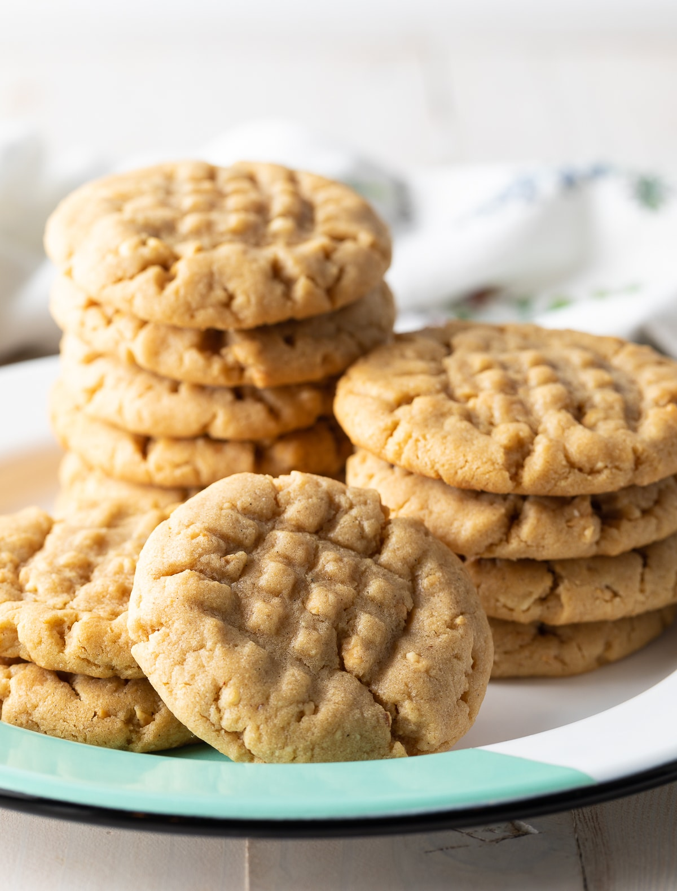

Ginger-Touched Oatmeal Peanut Butter Cookies

Description
This recipe is based on Michele's Oatmeal Peanut Butter Cookies II, and had a WOW! moment when you add the ginger...
Ingredients
- ½ cup butter
- ½ cup shortening
- 1 cup peanut butter
- 1 cup packed brown sugar
- ¾ cup white sugar
- 2 eggs
- ½ teaspoon vanilla extract
- 1 ½ cups all-purpose flour
- 2 teaspoons baking soda
- 1 teaspoon salt
- 1 teaspoon ground ginger
- 1 cup rolled oats
- 1 cup chopped crystallized ginger
Steps
- Preheat oven to 350 degrees F (175 degrees C).
- In a medium bowl, cream together the shortening, butter, brown sugar and white sugar. Beat in the eggs, peanut butter and vanilla. Combine the flour, baking soda, salt and ground ginger, stir into the creamed mixture. Finally, stir in the rolled oats and candied ginger. Drop by rounded teaspoonfuls onto an unprepared cookie sheet.
- Bake for 10 to 12 minutes in the preheated oven, until golden brown. Remove from the baking sheet to cool on wire racks. Store in an airtight container when cool.